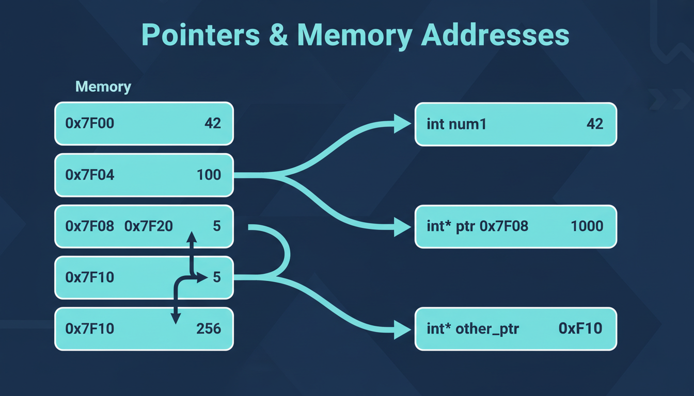

Поняття покажчика
Покажчик (вказівник, pointer) — це змінна, що зберігає адресу іншої змінної в пам'яті. Покажчики — одна з найпотужніших і найважливіших можливостей C++.

Покажчик — це змінна, значенням якої є адреса комірки пам'яті. За цією адресою може зберігатися дане будь-якого типу.
Оголошення покажчика
// Синтаксис: тип* ім'я;
int* ptr1; // вказівник на int
double* ptr2; // вказівник на double
char* ptr3; // вказівник на char
// Ініціалізація
int x = 10;
int* p = &x; // p зберігає адресу x
// Кілька вказівників
int *a, *b, *c; // a, b, c — вказівники на int
int* d, e; // d — вказівник, e — int!Неініціалізований вказівник містить "сміття" і вказує на випадкову адресу. Використання такого вказівника призводить до невизначеної поведінки. Завжди ініціалізуйте вказівники: або адресою існуючої змінної, або nullptr.
Оператори адреси (&) та розіменування (*)
| Оператор | Назва | Опис | Приклад |
|---|---|---|---|
& | Взяття адреси | Повертає адресу змінної | int* p = &x; |
* | Розіменування | Доступ до значення за адресою | int val = *p; |
int x = 42;
int* p = &x; // p = адреса x
cout << x << endl; // 42 — значення x
cout << p << endl; // 0x7fff... — адреса x
cout << *p << endl; // 42 — значення за адресою p
*p = 100; // зміна значення x через вказівник
cout << x << endl; // 100Null вказівник
int* p1 = nullptr; // сучасний спосіб (C++11)
int* p2 = NULL; // застарілий макрос
int* p3 = 0; // також допустимо
// Перевірка
if (p1 == nullptr) {
cout << "Вказівник не ініціалізований" << endl;
}
// Безпечне використання
if (p1 != nullptr) {
*p1 = 10;
}Арифметика вказівників
int arr[] = {10, 20, 30, 40, 50};
int* p = arr; // p вказує на arr[0]
cout << *p << endl; // 10 (arr[0])
cout << *(p+1) << endl; // 20 (arr[1])
cout << *(p+2) << endl; // 30 (arr[2])
p++; // p тепер вказує на arr[1]
cout << *p << endl; // 20
p += 2; // p тепер вказує на arr[3]
cout << *p << endl; // 40
// Різниця вказівників
int* p1 = &arr[1];
int* p2 = &arr[4];
cout << p2 - p1 << endl; // 3 (кількість елементів між ними)Вказівники та масиви
int arr[5] = {10, 20, 30, 40, 50};
int* p = arr; // p = &arr[0]
// Еквівалентні записи:
cout << arr[2] << endl; // 30
cout << *(arr+2) << endl; // 30
cout << p[2] << endl; // 30
cout << *(p+2) << endl; // 30Динамічна пам'ять (new та delete)
// Виділення пам'яті для одного елемента
int* p = new int; // виділяє пам'ять для int
*p = 42;
delete p; // звільняє пам'ять
// Виділення з ініціалізацією
int* q = new int(100);
delete q;
// Виділення масиву
int* arr = new int[100]; // масив з 100 int
arr[0] = 1;
arr[1] = 2;
delete[] arr; // звільнення масиву!
// Перевірка
int* ptr = new(nothrow) int[1000000000];
if (ptr == nullptr) {
cout << "Не вдалося виділити пам'ять!" << endl;
}Кожен new має відповідати delete! Витік пам'яті (memory leak) відбувається, коли виділена пам'ять не звільняється. Для масивів використовуйте delete[], а не просто delete.
📝 Тести для самоперевірки
💻 Практичні завдання
Напишіть функцію swap(int* a, int* b), яка обмінює значення двох змінних через вказівники.
Створіть динамічний масив розміром N, заповніть його, знайдіть суму та максимум. Звільніть пам'ять.
Напишіть функцію реверсу масиву, яка використовує тільки вказівники (без індексації []).
Реалізуйте власну версію strcmp, яка використовує тільки вказівники.
Створіть двовимірний динамічний масив (матрицю) MxN через вказівник на вказівник. Заповніть та звільніть.
Реалізуйте власну версію strcpy, яка використовує тільки вказівники.
Реалізуйте власну версію strlen, яка використовує тільки вказівники.
Реалізуйте клас для динамічного рядка з функціями: створення, копіювання, конкатенація, порівняння, звільнення.
Виведіть елементи масиву в зворотному порядку, використовуючи тільки вказівники (без індексів та arr[i]).
Динамічно виділіть пам'ять під масив з N структур Student. Реалізуйте введення, виведення та звільнення пам'яті.